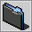

- MP3
- XI/XM
- MERCH
- ABOUT
MP3 & DOWNLOADS
2017
URBAN DISTRESS CALL - ZEROLIZER
SPIKEY MECHANIKS (DISKETTE SINGLE) - 4 FOR FAKE
HELL HEX (PLAGA JAM) - INBREED FROM NOAH + KAIN
INSTRUMENTS & MODULES
THE FOLLOWING ARE FASTTRACKER 2 EXTENDED FILES CREATED IN MILKYTRACKER. FEEL FREE TO USE THEM AND SHOW ME SOME TRACKS.
EXTENDED INSTRUMENTS
 ABSTRAKT_KIT.xi PINKFUZZ.xi
EXTENDED MODULES
Sorry - No Goodies Yet.
MERCH & ALBUMS
Sorry - No Goodies Yet.
ABOUT
ZEROLIZER IS A POST-CHIPTUNE PROJECT FOCUSING ON FASTTRACKER 2 INSTRUMENTS AND SAMPLES. WITH MILKYTRACKER AS THE WEAPON OF CHOICE, KAIN CREATES A BIZARRE AND VARIED STYLE THAT CAN ONLY BE DESCRIBED AS ZEROLIZER.
KAIN DE RIVERA IS A RESIDENT OF MEXICO CITY, EXPERIENCED IN SYNTHESIS, COMPOSITION AND GAMEBOY MUSIC. THIS PROJECT IS A ZERO-SUM GAME RESULTING FROM THAT EXPERIENCE.
ZEROLIZER CAN BE REACHED ON THE SOCIAL NETWORK OR BY EMAIL FOR INQUIRIES, COLLABORATIONS AND BOOKINGS. DROP A LINE ANYTIME.